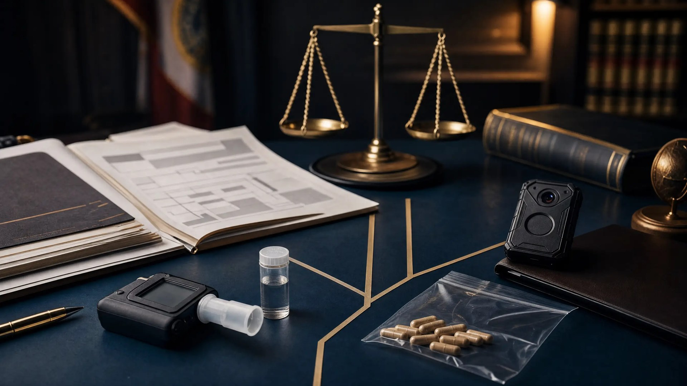

When DUI Complexity Can Benefit the Defense in Florida

Some DUI cases are more complicated than others. Complexity can benefit the accused: every added expert, exhibit, witness, and scientific conclusion creates another link the State must prove. It does not make a case easy. It creates more places to test whether the evidence holds together.
This case combined a damaging field sobriety video, an FDLE expert, a DRE evaluation, disputed pills, late discovery, and an actual-physical-control issue. The State filed a nolle prosequi, and the prosecutor later confirmed the case was closed because he did not believe the evidence could prove the DUI. A complete Florida DUI defense analysis must test every part of that evidence.
The State Still Had to Prove Control and Impairment
Under F.S. 316.193, the State must prove driving or actual physical control plus impairment or an unlawful alcohol level. This case presented a real actual physical control issue; presence near or inside a vehicle did not eliminate that element.
The client's breath result was reported as 0.000. Florida law creates a presumption against alcohol impairment at 0.05 or below. The result did not end the drug-impairment theory, but it removed the most familiar explanation for poor roadside performance.
A 0.000 breath test answers one question, not every question
It is powerful evidence against alcohol impairment, but it does not rule out drugs or explain the video. The remaining evidence must be admitted and tied to the relevant time.
The Pills and the Toxicology Were Different Evidence
Officers found pills inside the vehicle, but appearance was not chemical identity. The defense position was that they were herbal products. The officer who recovered them had not been subpoenaed for trial, and the items sent to FDLE had not been returned as courtroom-ready evidence.
The pills also had to be separated from the biological toxicology. The State disclosed cocaine-related findings and a pain medication. Questions remained: What was detected, in what specimen and concentration? What did it establish about timing and impairment?
An FDLE expert was listed to discuss the results, but laboratory findings are not automatic proof of impairment. As our Florida DUI defense guide explains, the State must connect the science to the statutory elements.
The DRE Evidence Arrived Late in the Trial Process
With a 0.000 breath result, the investigation shifted toward drugs. A drug recognition expert conducted a drug influence evaluation. Yet at the first trial setting, the defense had not received the DRE expert disclosure, certification, or evaluation report. Those materials arrived later as supplemental discovery.
Florida Rule of Criminal Procedure 3.220 covers expert reports and scientific-test results. Late discovery is not automatically a dismissal, but the defense needs time to investigate qualifications, compare the report with video, review the protocol, and consider its own expert. The court may examine prejudice through a Richardson hearing for a discovery violation.
The roadside performance was poor, and the defense had to confront it honestly. But poor performance does not identify its own cause. Instructions, conditions, appearance, and the DRE conclusions had to be compared with the recording. Our article on DUI eye-test and DRE issues explains why administration and interpretation matter.
Why the HGN Finding Did Not Match the Toxicology
The officer testified that horizontal gaze nystagmus, or HGN, was present. Under NHTSA's DRE training, three of the seven drug categories normally cause HGN: central nervous system depressants, inhalants, and dissociative anesthetics. The other four categories normally do not.
None of the reported toxicology findings fell within the three categories that normally produce HGN. That created a scientific mismatch. The eye observation did not identify the drug, while the toxicology did not explain the HGN. Our detailed article on challenging HGN evidence in Florida DUI cases explains why an officer's observation must be tested against training, administration, other possible causes, and the rest of the evidence.
HGN is one clue, not a toxicology result
HGN may help an officer form an opinion, but it does not identify a particular substance or establish impairment by itself. When the claimed eye signs and laboratory findings point in different directions, the State still must prove a coherent impairment theory beyond a reasonable doubt.
Trial Required Witnesses, Foundations, and a Clean Video
At trial, the State needed admissible evidence through the right witnesses. The officer who found the pills was important to identifying where they came from and how they were handled. The unavailable items raised authentication and chain questions. Under F.S. 90.901, evidence must be supported by proof that it is what its proponent claims.
The body-camera footage contained statements requiring redaction before it could be played to the jury. The parties had to preserve admissible evidence without exposing jurors to material they should not hear. None of these issues necessarily defeated the case alone. Together, they affected how it could be tried.
The defense had to prepare several tracks at once
- Control: Could the State prove driving or actual physical control?
- Alcohol: How did the reported 0.000 breath result affect the prosecution theory?
- Drug impairment: Did the DRE evaluation and toxicology establish impairment at the relevant time?
- Physical evidence: Could the pills be identified, authenticated, and connected to the client?
- Discovery: Did the late expert material leave adequate time for meaningful trial preparation?
- Video: What did the body camera show, and what portions required redaction?
A Missed Court Date Added One More Complication
The client previously missed a trial date after a scheduling mistake, and the judge issued a warrant. We explained what happened, and the court recalled it before an arrest. That did not decide the DUI, but it prevented another complication. Our Florida warrant and capias guide explains the terminology.
Why the State Closed the Case
After the DRE information was disclosed, the State filed a nolle prosequi. I later spoke directly with the prosecutor. He explained that he did not believe the State could prove the DUI because the officer's HGN testimony did not match any drug category reflected in the toxicology results.
The prosecutor confirmed the case is closed. The prosecution ended without a DUI conviction, and the client is pleased with the result. The favorable outcome came from examining how all the evidence fit together rather than treating a poor field sobriety performance or an HGN claim as the end of the analysis.
Why My Law-Enforcement Experience Matters to the Defense
During my Florida State Trooper years, I served as a drug recognition expert and DUI instructor. I learned how officers build drug-impairment cases and how prosecutors may try to cure weaknesses. I can compare what the officer believed, what the protocol required, what the evidence proves, and what the State may try to repair.
But I do not work for the prosecution. I use that perspective for the defense—to anticipate the State's next move, challenge unsupported conclusions, and turn complexity into an advantage when the facts permit it. A complicated case does not guarantee a favorable outcome. It often creates more points where the prosecution's proof can be tested.
Every case is different. This anonymized past result does not guarantee the same or a similar outcome in another case. DUI cases depend on their particular facts, witnesses, scientific evidence, and procedural history. This information is general and is not legal advice.
Related Articles
Facing a Complicated DUI Charge in Central Florida?
A zero breath test, suspected drugs, a DRE evaluation, body-camera footage, or pills found in a vehicle can create a case with several moving parts. Lotter Law reviews the complete evidence before advising you about your options. Call for a free consultation.
Legal and Training References
- F.S. 316.193 — Driving Under the Influence
- F.S. 316.1934 — Presumption of Impairment; Testing Methods
- F.S. 90.901 — Authentication or Identification of Evidence
- Florida Rule of Criminal Procedure 3.220 — Discovery
- NHTSA — Drug Evaluation and Classification Preliminary School Instructor Guide
- International Association of Chiefs of Police — Seven Drug Categories

Jeff Lotter
Criminal Defense Attorney | Former State Trooper
Jeff Lotter is an Orlando criminal defense attorney, former Florida Highway Patrol trooper, former drug recognition expert, and former DUI instructor. He uses that law-enforcement perspective to defend DUI and criminal cases throughout Central Florida.